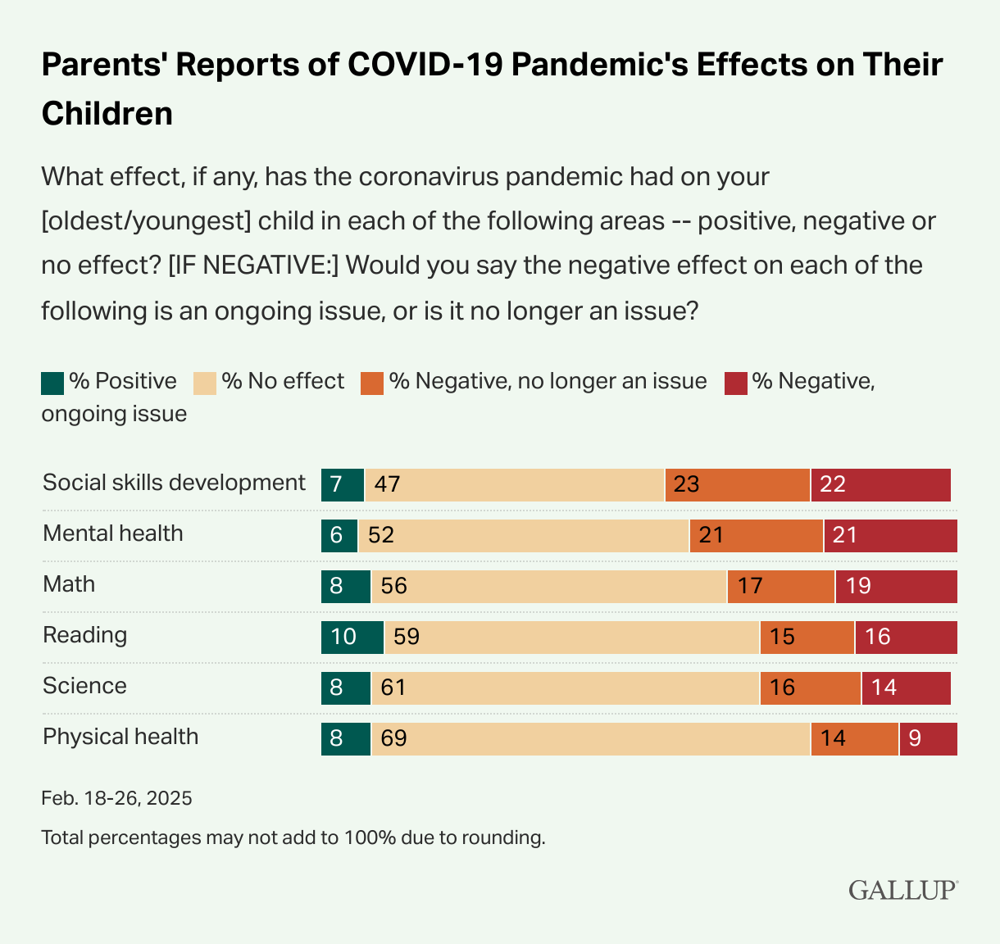
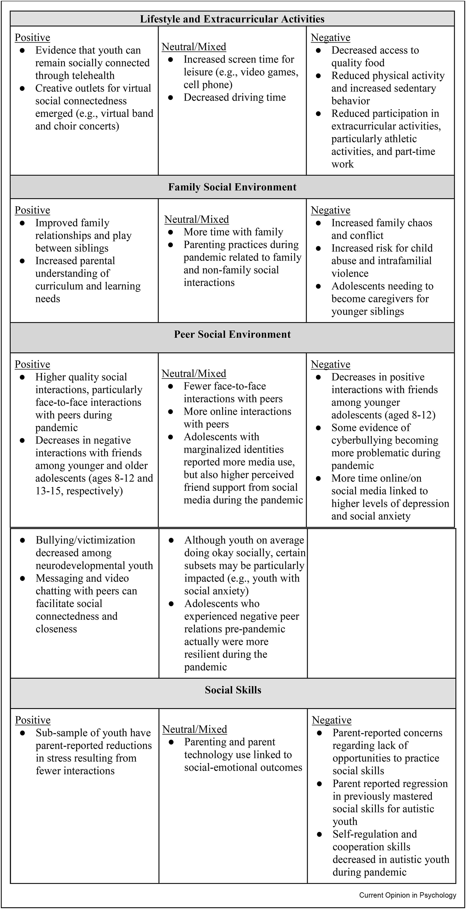

COVID-19: Social & Behavioral Impacts
Students Mental Health (Demographics)
COVID-19 Pandemic has negatively impacted school-age children,
causing them to develop emotional & social issues.
Demographically speaking, 45% of parents of school-age children
stated that the pandemic has negatively impacted their child’s
social skills development, half of that percentage of parent states
that those troubles in social skills are continuing, and the other half
of parent states that their child’s social issues are beginning to ease
up. 42% of parents state that their children’s mental health has
been negatively affected by the pandemic, which includes 21%
saying that mental health issues are still persistent.

Adverse affects of Isolation
The shift to an online-learning platform also caused major mental
health problems for students, due to increased isolation, more time
being spent on devices with little to no physical activity, overall
leading to increased stress, anxiety, and depression. Due to the
reduced instructional time, teachers had to redesign their lesson
plans and begin finding innovative ways to keep students engaged.
This forced teachers to eliminate certain sections of their
curriculum, meaning that students are missing important topics &
subjects that should be discussed in class, but unfortunately
weren’t. The shift also caused lots of extracurricular activities to be
suspended altogether, and because students couldn’t engage in
these activities, they’ll have less ways to develop & practice their
talents, less ways for stress management, and being able to connect
with their fellow peers.

The COVID-19 Pandemic, and the mandatory quarantine &
isolation has resulted in significant disruptions to in-person
interactions, placing adolescent children at high risk for negative
social development outcomes. Adolescent children were those who
were greatly socially impacted by the pandemic more than adults,
in fact the well-being of an adolescent was affected due to the
long-term isolation & loneliness causing increased anxiety,
depression, and suicidal ideation among the youth. In fact, less
inperson & digital socialization, more social isolation, and less social
support were signs associated with greater psychopathology during
the pandemic, very controlling for pre-pandemic symptoms.